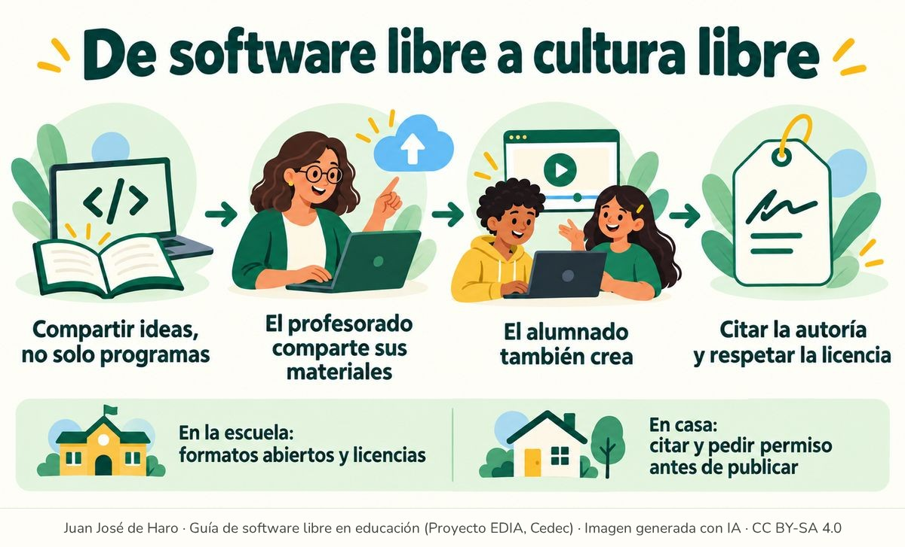

El trabajo docente
Las ideas que dieron origen al software libre no se han quedado en los programas. Si un programa se puede copiar, estudiar, mejorar y compartir, ¿por qué no un texto, una fotografía, una canción o un material didáctico? De esa pregunta nace la cultura libre: obras que quienes las crean ponen a disposición de todo el mundo para que se puedan usar, adaptar y volver a compartir. Algunos de sus ejemplos más conocidos son Wikipedia, los mapas de OpenStreetMap o los recursos educativos abiertos, y buena parte de ellos utilizan licencias Creative Commons.
En educación, esto lleva a una pregunta interesante: ¿qué ocurre con el trabajo que realizan los propios docentes? El profesorado genera una enorme cantidad de materiales que suelen quedarse olvidados en sus ordenadores, porque nunca se hacen públicos, excepto para sus propias clases. El espíritu de colaboración que ha originado el software libre no puede permanecer al margen de la tarea docente, precisamente porque los docentes crean gran cantidad de materiales.
Es cierto que cada clase es diferente y que lo que funciona en 3.º A resulta un fracaso en 3.º B; no solo eso, cada persona es diferente y la forma de explicar la Biología de Ana no es la misma que la de David, cada uno pone el énfasis en cosas que no siempre son las mismas. David explica con detalle una enfermedad del tubo digestivo mientras que Ana no la llegó a nombrar, y Ana realizó una actividad práctica que David no tuvo tiempo de hacer. En parte, esta dispersión hace que muchos docentes piensen que no merece la pena poner a disposición de otras personas lo que han construido. Expresiones como «lo que yo haga no le servirá a otro» o «lo que he hecho no es tan bueno como para ponerlo en Internet» frenan parte de la rica producción docente que en realidad existe. Otras veces falta simplemente costumbre: el material se usa en clase y queda guardado en el ordenador o en la nube, sin que nadie más pueda aprovecharlo.
Compartir no es una obligación, pero multiplica el valor del trabajo docente: un material publicado con licencia libre puede servir a otras clases, recibir mejoras y seguir al alcance del propio alumnado cuando acaba el curso.
Quizás no todos los materiales sean aptos para su difusión —por ejemplo, los que incluyen imágenes o textos de otras personas sin permiso para compartirlos—, pero es indudable que muchos otros sí lo son. Participar de la cultura libre no consiste solo en tomar, como si Internet fuese un gran bazar de oportunidades, sino también en compartir y ayudar a crear la cultura de la que, por su profesión, forman parte todas las personas que se dedican a la enseñanza. Para ello existen las licencias Creative Commons, que se explican en «Licencias para compartir», y repositorios como Procomún, la red de recursos educativos abiertos del Ministerio de Educación y las comunidades autónomas.
Tampoco hay que olvidar al alumnado. Los alumnos y alumnas también crean trabajos, presentaciones, fotografías o vídeos, y conviene que aprendan pronto a decidir qué quieren compartir y en qué condiciones. La otra cara de compartir es respetar el trabajo ajeno: citar la procedencia de lo que se utiliza y comprobar qué permite su licencia. Estas ideas se trabajan en «Actividades sobre licencias y autoría».
Estrategias en la escuela
- Los centros deben poner a disposición de su profesorado la formación apropiada para poder compartir los materiales creados. Enseñar una variedad de técnicas y herramientas facilitará luego su difusión.
- En el ámbito del centro educativo hay que favorecer el uso de formatos abiertos, tanto entre el alumnado como entre el profesorado. Pedir los documentos en formato ODF (.odt, .ods, .odp) en lugar de los formatos de Microsoft Office (.docx, .xlsx, .pptx), y usar otros estándares abiertos, facilita que cualquiera pueda abrir, modificar y reutilizar lo que se comparte, y ayuda a concienciar sobre el uso de programas libres.
- Los materiales del centro y los trabajos del alumnado deben indicar su autoría y su licencia. Acostumbrarse a hacerlo, y a citar las fuentes que se utilizan, es la mejor forma de aprender a respetar la creación de los demás.
Para trasladar a las familias
- En casa también se crea y se comparte: fotografías, vídeos o trabajos escolares. Las familias pueden enseñar a citar la procedencia de las imágenes y los textos que se usan en los trabajos y a pedir permiso antes de publicar fotografías o contenidos de otras personas, algo especialmente importante en las redes sociales.

